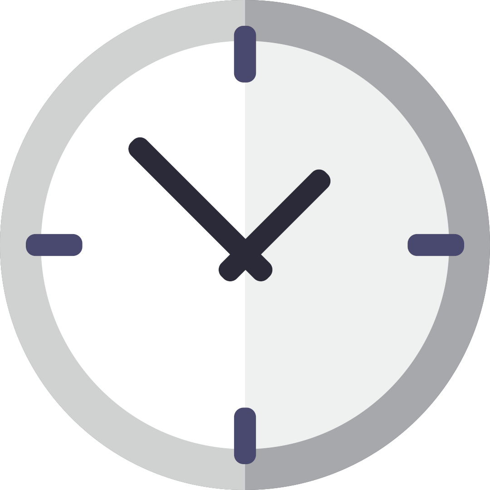

<!--
  Generated template for the ShowdocPage page.

  See http://ionicframework.com/docs/components/#navigation for more info on
  Ionic pages and navigation.
-->
<ion-header>

  <ion-navbar color="primary">
    <ion-title>เวลาหมอนัด</ion-title>
    <!-- <ion-buttons right (click)="gotop4()">
      <button ion-button icon-only clear color="light">
        <ion-icon ios="ios-add" md="md-add"></ion-icon>
      </button>
    </ion-buttons> -->
  </ion-navbar>

</ion-header>


<ion-content padding>

  <!-- <ion-item *ngFor="let xs of items" class="sub" (click)="read(xs.id_patient,xs.name_hospital,xs.name_docter,xs.dat_date,xs.dat_time,xs.id_datdoc)">
    <ion-thumbnail item-start>
      
    </ion-thumbnail>
    <h2>
      โรงพยาบาล :
      {{ xs.name_hospital }}
    </h2>
    <h2>
      ชื่อคุณหมอ :
      {{ xs.name_docter }}
    </h2>
    <h2>
      วันที่ :
      {{ xs.dat_date }}
    </h2>

    <h2>
      เวลานัด :
      {{ xs.dat_time }}
    </h2>
  </ion-item> -->


  <ion-list>
    <ion-item-sliding #item *ngFor="let xs of items; let i = index">
      <ion-item>
        <ion-thumbnail item-start>
          
        </ion-thumbnail>
        <h2>
          โรงพยาบาล :
          {{ xs.name_hospital }}
        </h2>
        <h2>
          ชื่อคุณหมอ :
          {{ xs.name_docter }}
        </h2>
        <h2 >
          <div >
          วันที่ :
          {{ xs.dat_date }}</div>
        </h2>

        <h2>
          เวลานัด :
          {{ xs.dat_time }}
        </h2>
      </ion-item>

      <!-- <ion-item-options side="left">
            <button ion-button >Favorite</button>
            <button ion-button color="danger" >Share</button>
          </ion-item-options> -->

      <ion-item-options side="right">
        <button ion-button color="danger"
          (click)="read(xs.id_patient,xs.name_hospital,xs.name_docter,xs.dat_date,xs.dat_time,xs.id_datdoc)">แก้ไขข้อมูล</button>
        <!-- <button ion-button color="danger" >ลบข้อมูล</button> -->
      </ion-item-options>
    </ion-item-sliding>
  </ion-list>

</ion-content>
<ion-footer style="background-color:#86bd46">
  <ion-buttons icon-end>
    <button ion-button full clear color="light" (click)="gotop4()">เพิ่มเวลาหมอนัด
    </button>
  </ion-buttons>
</ion-footer>